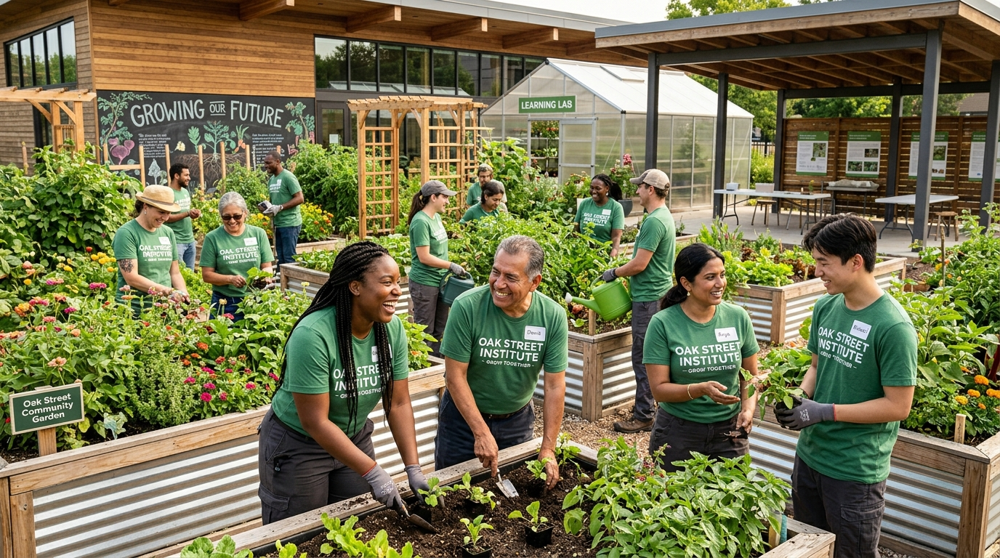
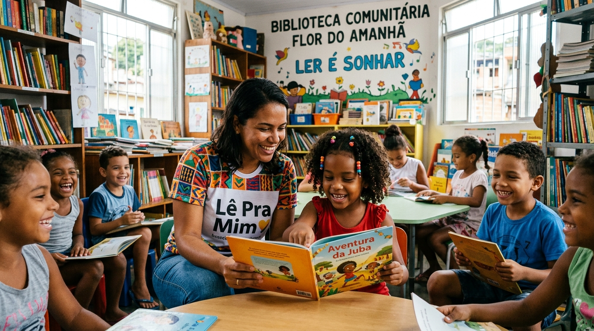
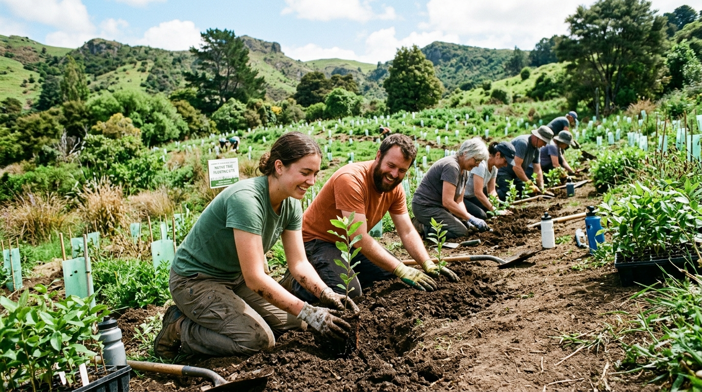
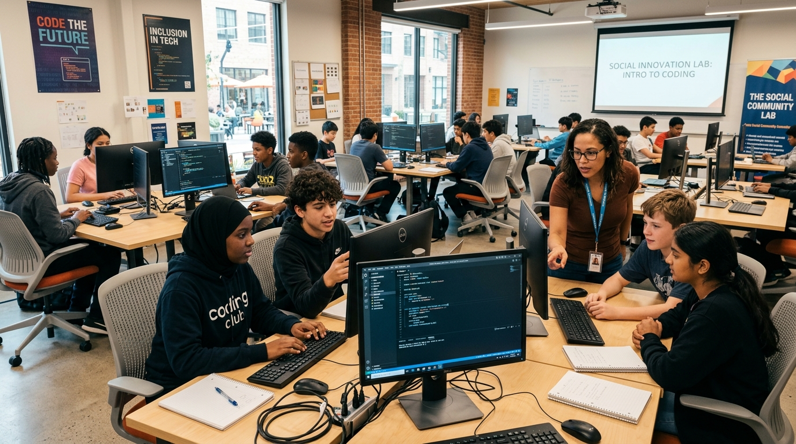

Educação e Leitura
Salas de leitura e reforço escolar para crianças em situação de vulnerabilidade.
O Instituto Esperança Viva atua na linha de frente do desenvolvimento comunitário, promovendo educação infantil, reflorestamento ecológico e oficinas profissionalizantes para jovens.

Voluntários ativos mobilizados neste ano
As organizações do terceiro setor frequentemente lidam com recursos limitados e dependem enormemente do engajamento de voluntários e da captação de doações.
A falta de uma plataforma digital clara, acessível e bem estruturada pode comprometer severamente a credibilidade institucional e dificultar a navegação dos apoiadores. Por isso, desenvolvemos esta plataforma sob o padrão HTML5 semântico, garantindo a correta indexação nos motores de busca (SEO) e fornecendo um nível exemplar de acessibilidade digital para todos os usuários.
Fundado com o compromisso inegociável da ética, transparência e amor ao próximo, o Instituto Esperança Viva trabalha para preencher lacunas históricas nas áreas de educação pública suplementar, regeneração de ecossistemas urbanos e rurais e inclusão socioprodutiva.
Faça Parte Dessa RedeSalas de leitura e reforço escolar para crianças em situação de vulnerabilidade.
Reflorestamento de matas ciliares, hortas comunitárias e educação climática.
Capacitação técnica em programação e habilidades do futuro para jovens da periferia.
Distribuição de alimentos saudáveis de produtores locais para famílias em risco.
Cada número representa uma história de acolhimento, superação e renovação ambiental.
Conheça as frentes ativas de atuação do Instituto e apoie a continuidade das atividades.

Criação de espaços de leitura acolhedores e reforço pedagógico para mais de 350 crianças da rede pública.

Recuperação de nascentes e matas degradadas com envolvimento de famílias agricultoras locais.

Curso prático de introdução à programação web e inclusão digital para jovens do ensino médio público.
Escolha um valor e veja como sua contribuição se traduz em impacto imediato.
Fornece 2 kits de material escolar para crianças atendidas no projeto Ler é Sonhar.
Seu talento, empatia e dedicação podem transformar a realidade de centenas de famílias. Junte-se ao nosso time de voluntários!
Preencher Ficha de Voluntário →